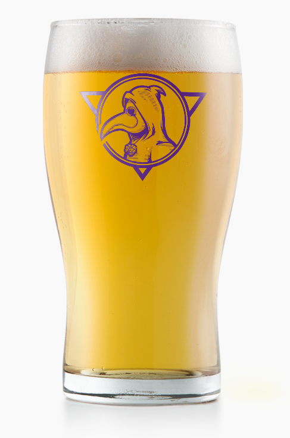

Ales To Restore The Spirit
Acopon
(ak’-o-pon)A restorative, or cordial medicine or application.
A long time ago on an island across the pond, when US craft beer was still in its formative
years, we fell in love with traditional English ales. Bitters, Milds, Old Ales, Porters, best
when fresh from a cask!
At Acopon Brewing Co., English ales are our specialty, and we tap fresh casks every week. That’s
not to say English ales are all we ever brew. Good beer is good beer. We love everything from
hoppy west-coast style IPA's to big bold Russian Imperial Stouts, and you’ll find them all on
tap at Acopon.
Stop by for an ale to restore your mind, body and spirit.
